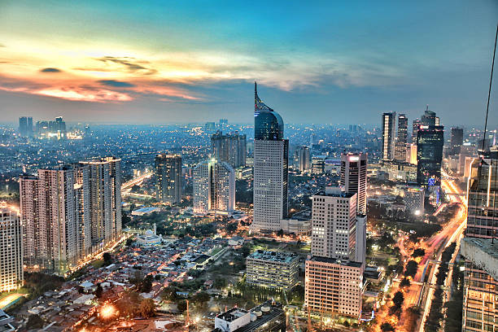
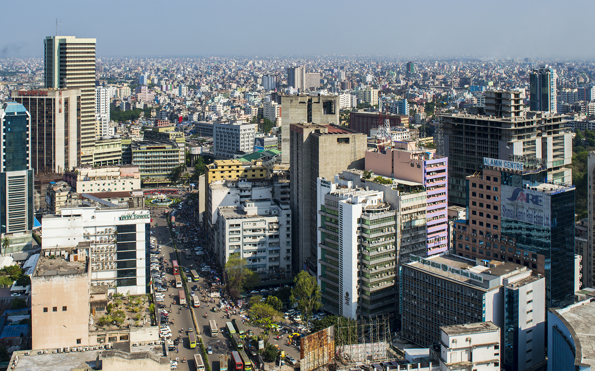
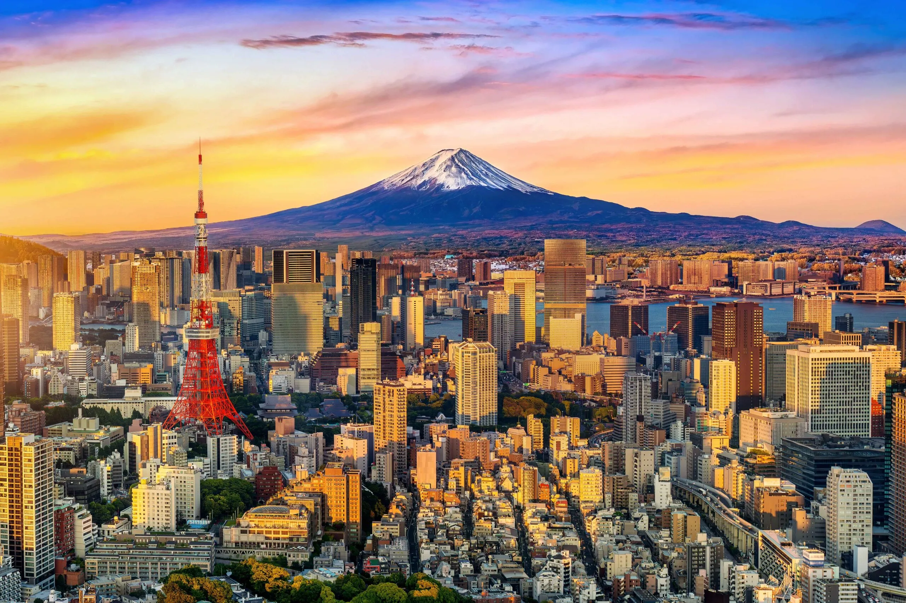
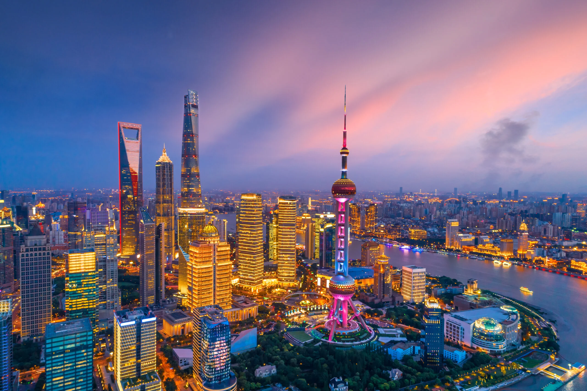

Jakarta
UN estimated population: 41,913,860
Jakarta, Indonesia's massive capital, sits on the northwest coast of the island of Java. A historic mix of cultures – Javanese, Malay, Chinese, Arab, Indian and European – has influenced its architecture, language and cuisine. The old town, Kota Tua, is home to Dutch colonial buildings, Glodok (Jakarta’s Chinatown) and the old port of Sunda Kelapa, where traditional wooden schooners dock.

Dhaka
UN estimated population: 36,585,479
Dhaka, formerly known as Dacca, is the capital and largest city of Bangladesh. With an estimated population of 36.6 million, Dhaka is the second largest city by population in the world, and is widely considered to be the most densely populated built-up urban area in the world.

Tokyo
UN estimated population: 33,412,512
Tokyo, Japan’s busy capital, mixes the ultramodern and the traditional, from neon-lit skyscrapers to historic temples. The opulent Meiji Shinto Shrine is known for its towering gate and surrounding woods. The Imperial Palace sits amid large public gardens. The city's many museums offer exhibits ranging from classical art (in the Tokyo National Museum) to a reconstructed kabuki theater (in the Edo-Tokyo Museum).

Delhi
UN estimated population: 30,222,405
Delhi, India’s capital territory, is a massive metropolitan area in the country’s north. In Old Delhi, a neighborhood dating to the 1600s, stands the imposing Mughal-era Red Fort, a symbol of India, and the sprawling Jama Masjid mosque, whose courtyard accommodates 25,000 people. Nearby is Chandni Chowk, a vibrant bazaar filled with food carts, sweets shops and spice stalls.

Shanghai
UN estimated population: 29,558,908
Shanghai, on China’s central coast, is the country's biggest city and a global financial hub. Its heart is the Bund, a famed waterfront promenade lined with colonial-era buildings. Across the Huangpu River rises the Pudong district’s futuristic skyline, including 632m Shanghai Tower and the Oriental Pearl TV Tower, with distinctive pink spheres. Sprawling Yu Garden has traditional pavilions, towers and ponds.